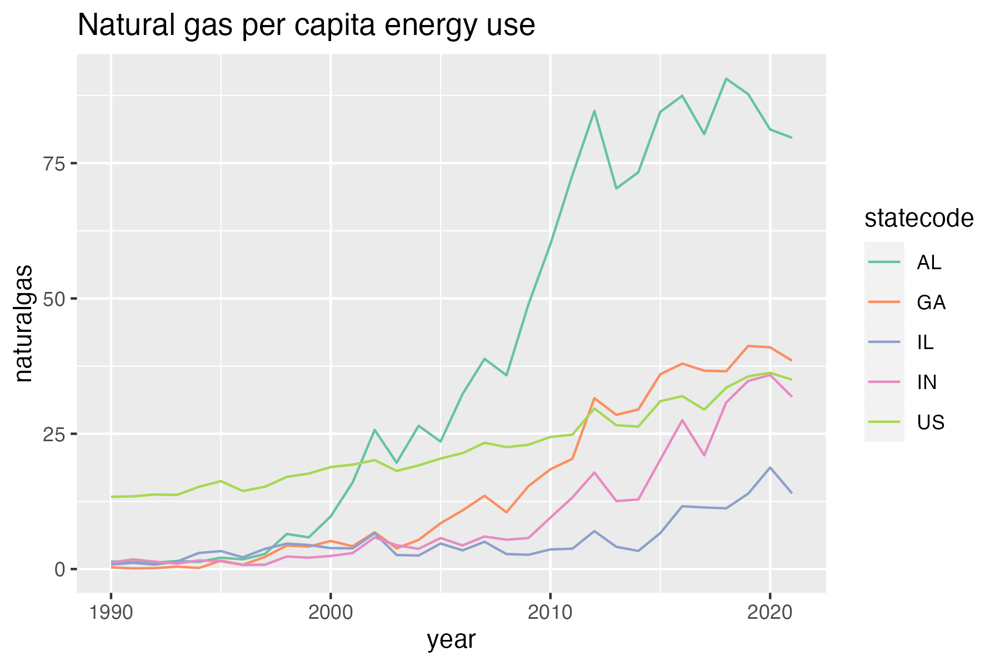
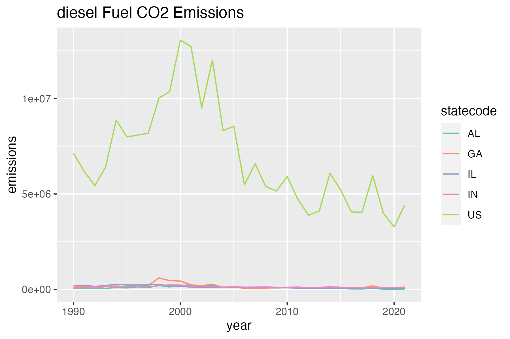

Introduction
The four chosen states to compare in this study were Illinois, Indiana, Alabama, and Georgia. These states were chosen to begin to understand the ways in which state politics have and will affect energy generation and consumption. Alabama and Georgia were chosen as adjacent states that may experience similar energy needs in as far as climate affecting energy needs. Although Georgia has historically been a swing state, it has shifted blue in the past election, whereas Alabama has a stronger history of voting red. Illinois and Indiana represent a similar relationship where climate impacted energy needs mirror each other but there is a clear blue voting history in Illinois, while Indiana has mostly voted red.
This study used data from the US State Energy Data System (SEDS) to determine the differences in fuel composition that generates power for the electrical grid and CO2 emissions for each of those fuel origins. The fuel types contributing to the electricity grid chosen were coal, natural gas, and diesel fuel. The years of this study focused on 1990-2021.
Energy Generation

The four chosen states to compare in this study were Illinois, Indiana, Alabama, and Georgia. These states were chosen to begin to understand the ways in which state politics have and will affect energy generation and consumption. Alabama and Georgia were chosen as adjacent states that may experience similar energy needs in as far as climate affecting energy needs. Although Georgia has historically been a swing state, it has shifted blue in the past election, whereas Alabama has a stronger history of voting red. Illinois and Indiana represent a similar relationship where climate impacted energy needs mirror each other but there is a clear blue voting history in Illinois, while Indiana has mostly voted red.
The natural gas generated (per capita) from each chosen state, as well as the US as a whole, show that it has become an increasingly used fuel source for the electricity grid. Alabama in particular stands out at having the sharpest rise in consumption, especially around 2010. This significant increase in natural gas production may be aXributed to energy transfers to adjacent states like Georgia, which has a higher population. Illinois and Indiana also show a similar paXern, but interestingly, Indiana uses more natural gas per capita than Illinois. Although overall generation is higher in Illinois, Indiana may see more usage per person with inefficiencies associated with a less urbanized landscape.
The coal usage over time sees a decrease from all 4 states and the US as a hole. This clearly lines up with the US’s aXempt to move away from coal as a fuel source as it’s is one of the heaviest CO2 emiXers. Here, Indiana is the highest coal generator per capita, with Alabama following.
The diesel generation chart has most states and the US following a trend that shows a spike around 1996 and a slow decline aOer. Georgia has the highest spike in diesel fuel generation. Illinois had the most gentle rise around that time, possibly due to less demand for diesel in a state with very liXle heavy industry.
This overall chart makes it easy to compare the fuel generation over time and by state. From this you can see that Alabama and Indiana use more coal per capita. In all 3 fuel categories, Illinois uses the least fuel per capita. This may be due to the highly efficient population clustered in the Chicago metropolitan area. You can also see that the US as a whole has moved away from coal and diesel and uses more natural gas to power the electric grid. Looking at Georgia compared to the other states shows that it is more in trend with a blue state than a geographically adjacent state. This may speak to new efforts in Georgia to decarbonize the grid, like Drawdown Georgia. Georgia also seems to be unique in never seeing a rise in coal usage during the late 1990s and has only since further declined its coal usage.
Energy Emissions

The energy emissions by fuel choice were compared to the US as a whole and the four chosen study cities. The trend lines show a similar paXern for diesel emissions where there is a rise just before the year 2000 and then a slow decline.
Natural gas missions also follows the generation paXerns seen before. Looking at net emissions, Alabama leads despite having the smallest population of all 4 cities. This starts to indicate that states that are less urbanized have systemic inefficiencies that prevent efficient fuel use. There is a historic correlation in the US with states that have a more urban population voting blue, while states with less urbanization tend to vote red.
The coal net emissions, while drastically in decline since the late 2000’s is still a significant electricity generating source, thus causing significant CO2 emissions. This chart shows Indiana and Illinois as leaders in net emissions, suggesting a geographic correlation to the higher coal usage
Looking at all 4 study states and the US as a whole show that Natural Gas is by far the biggest CO2 emiXer of the 3 fuel source types. The emissions aXributed to natural gas generation has been on a steady rise since the beginning of the study time, 1990. The emissions from diesel fuel has been on decline and represent about 1/6 of the total emissions aXributed to natural gas. Coal has also been on an overall decline and represents about 1/3 of the total emissions aXributed to natural gas.
This final plot looks at the total net emissions for each state from 1990-2021 by fuel type. This chart enables you to compare all states and their dependance on fuel types and the emissions associated with those fuel types. Coal by net emissions is the largest emieng source in the US, but it is interesting to see states like Texas, where natural gas also accounts for a large proportion of emissions. Coastal states appear to have the lowest net emissions. This could be from a reliance on other fuel sources, including renewables. California also stands out as a state with no significant emissions from coal, and relatively low emissions per capita considering it is the most populated state. Comparing Georgia to nearby states shows a similar trend of decreased coal usage and a rise in a natural gas, but Georgia, especially when compared to Florida shows a new decrease in overall emissions.